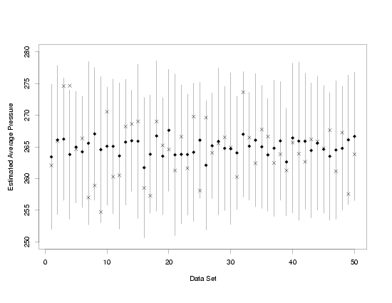

4.
Process Modeling
4.5.
Use and Interpretation of Process Models
4.5.1.
What types of predictions can I make using the model?
4.5.1.2.
|
How can I predict the value and and estimate the uncertainty of a single response?
|
|
|
A Different Type of Prediction
|
In addition to estimating the average value of the response variable for a given combination of
preditor values, as discussed on the previous page, it is also possible
to make predictions of the values of new measurements or observations from a process. Unlike the
true average response, a new measurement is often actually observable in the future. However,
there are a variety of different situations in which a prediction of a measurement value may be
more desirable than actually making an observation from the process.
|
|
Example
|
For example, suppose that a concrete supplier needs to supply concrete of a specified measured
strength for a particular contract, but knows that strength varies systematically with the
ambient temperature when the concrete is poured. In order to be sure that the concrete will meet
the specification, prior to pouring, samples from the batch of raw materials can be mixed, poured,
and measured in advance, and the relationship between temperature and strength can be modeled.
Then predictions of the strength across the range of possible field temperatures can be used to
ensure the product is likely to meet the specification. Later, after the concrete is poured (and
the temperature is recorded), the accuracy of the prediction can be verified.
|
|
\(\hat{y}=f(\vec{x},\hat{\vec{\beta}})\)
|
The mechanics of predicting a new measurement value associated with a combination of predictor
variable values are similar to the steps used in the estimation of the average response value. In
fact, the actual estimate of the new measured value is obtained by evaluating the estimated
regression function at the relevant predictor variable values, exactly as is done for the average
response. The estimates are the same for these two quantities because, assuming the model fits
the data, the only difference between the average response and a particular measured response is
a random error. Because the error is random, and has a mean of zero, there is no additional
information in the model that can be used to predict the particular response beyond the information
that is available when predicting the average response.
|
|
Uncertainties Do Differ
|
As when estimating the average response, a probabilistic interval is used when predicting a new
measurement to provide the information needed to make engineering or scientific conclusions.
However, even though the estimates of the average response and particular response values are
the same, the uncertainties of the two estimates do differ. This is because the uncertainty
of the measured response must include both the uncertainty of the estimated average response
and the uncertainty of the new measurement that could conceptually be observed. This
uncertainty must be included if the interval that will be used to summarize the prediction result
is to contain the new measurement with the specified confidence. To help distinguish the two types
of predictions, the probabilistic intervals for estimation of a new measurement value are called
prediction intervals rather than confidence intervals.
|
|
Standard Deviation of Prediction
|
The estimate of the standard deviation of the predicted value, \(\hat{\sigma}_f\),
is obtained as described
earlier. Because the residual standard deviation describes the
random variation in each individual measurement or observation from the process, \(\hat{\sigma}\),
the estimate of the residual standard deviation obtained when
fitting the model to the data, is used to account for the extra uncertainty needed to predict a
measurement value. Since the new observation is independent of the data used to fit the model,
the estimates of the two standard deviations are then combined by "root-sum-of-squares" or
"in quadrature", according to standard formulas for computing variances, to obtain the standard
deviation of the prediction of the new measurement, \(\hat{\sigma}_p\).
The formula for \(\hat{\sigma}_p\)
is
$$ \hat{\sigma}_p = \sqrt{\hat{\sigma}^2 + \hat{\sigma}^2_f} \, . $$
|
|
Coverage Factor and Prediction Interval Formula
|
Because both \(\hat{\sigma}_f\)
and \(\hat{\sigma}_p\)
are mathematically nothing more than different scalings of \(\hat{\sigma}\),
and coverage factors from the t distribution
only depend on the amount of data available for estimating \(\hat{\sigma}\),
the coverage factors are the same for confidence
and prediction intervals. Combining the coverage factor and the standard deviation of the
prediction, the formula for constructing prediction intervals is given by
$$ \hat{y} \pm t_{1-\alpha/2,\nu} \cdot \hat{\sigma}_p $$
As with the computation of confidence intervals, some software may
provide the total uncertainty for the prediction interval given the equation above, or may
provide the lower and upper prediction bounds. As suggested before, however, it is a good idea
to test the software on an example for which prediction limits are already available to make
sure that the software is computing the expected type of intervals.
|
|
Prediction Intervals for the Example Applications
|
Computing prediction intervals for the measured pressure in the
Pressure/Temperature example, at temperatures of 25,
45, and 65, and for the measured torque on specimens from the
polymer relaxation example at different
times and temperatures, gives the results listed in the tables below. Note: the number of
significant digits shown is larger than would normally be reported. However, as many significant
digits as possible should be carried throughout all calculations and results should only be rounded
for final reporting. If reported numbers may be used in further calculations, then they should
not be rounded even when finally reported. A useful rule for rounding final results that will not
be used for further computation is to round all of the reported values to one or two significant
digits in the total uncertainty, \(t_{1-\alpha/2,\nu} \, \hat{\sigma}_p\).
This is the convention for rounding that has been used in the tables below.
|
|
Pressure / Temperature Example
|
|
\(x\)
|
\(\hat{y}\)
|
\(\hat{\sigma}\)
|
\(\hat{\sigma}_f\)
|
\(\hat{\sigma}_p\)
|
\(t_{1-\alpha/2,\nu}\)
|
\(t_{1-\alpha/2,\nu} \, \hat{\sigma}_p\)
|
Lower 95%
Prediction
Bound
|
Upper 95%
Prediction
Bound
|
|
| 25 |
106.0025 |
4.299099 |
1.1976162 |
4.462795 |
2.024394 |
9.034455 |
97.0 |
115.0 |
| 45 |
184.6053 |
4.299099 |
0.6803245 |
4.352596 |
2.024394 |
8.811369 |
175.8 |
193.5 |
| 65 |
263.2081 |
4.299099 |
1.2441620 |
4.475510 |
2.024394 |
9.060197 |
254.1 |
272.3 |
|
|
Polymer Relaxation Example
|
|
\(x_1\)
|
\(x_2\)
|
\(\hat{y}\)
|
\(\hat{\sigma}\)
|
\(\hat{\sigma}_f\)
|
\(\hat{\sigma}_p\)
|
\(t_{1-\alpha/2,\nu}\)
|
\(t_{1-\alpha/2,\nu} \, \hat{\sigma}_p\)
|
Lower 95%
Prediction
Bound
|
Upper 95%
Prediction
Bound
|
|
| 20 |
25 |
5.586307 |
0.04341221 |
0.02840153 |
0.05187742 |
2.000298 |
0.10377030 |
5.48 |
5.69 |
| 80 |
25 |
4.998012 |
0.04341221 |
0.01217109 |
0.04508609 |
2.000298 |
0.09018560 |
4.91 |
5.09 |
| 20 |
50 |
6.960607 |
0.04341221 |
0.01371149 |
0.04552609 |
2.000298 |
0.09106573 |
6.87 |
7.05 |
| 80 |
50 |
5.342600 |
0.04341221 |
0.01007761 |
0.04456656 |
2.000298 |
0.08914639 |
5.25 |
5.43 |
| 20 |
75 |
7.521252 |
0.04341221 |
0.01205401 |
0.04505462 |
2.000298 |
0.09012266 |
7.43 |
7.61 |
| 80 |
75 |
6.220895 |
0.04341221 |
0.01330727 |
0.04540598 |
2.000298 |
0.09082549 |
6.13 |
6.31 |
|
|
Interpretation of Prediction Intervals
|
Simulation of many sets of data from a process model provides a good way to obtain a detailed
understanding of the probabilistic nature of the prediction intervals. The main advantage of
using simulation is that it allows direct comparison of how prediction intervals constructed
from a limited amount of data relate to the measured values that are being estimated.
|
|
|
The plot below shows 95 % prediction intervals computed from 50 independently generated data
sets that follow the same model as the data in the Pressure/Temperature example. Random errors
from the normal distribution with a mean of zero and a known standard deviation are added to
each set of true temperatures and true pressures that lie on a perfect straight line to produce
the simulated data. Then each data set is used to compute a prediction interval for a newly
observed pressure at a temperature of 65. The newly observed measurements, observed
after making the prediction, are noted with an "X" for each data set.
|
|
Prediction Intervals Computed from 50 Sets of Simulated Data
|

|
|
Confidence Level Specifies Long-Run Interval Coverage
|
From the plot it is easy to see that not all of the intervals contain the pressure values observed
after the prediction was made. Data set 4 produced an interval that did not capture the newly
observed pressure measurement at a temperature of 65. However, for 49 out of 50, or not much over
95 % of the data sets, the prediction intervals did capture the measured pressure. When the number
of data sets was increased to 5000, prediction intervals computed for 4734, or 94.68 %, of the
data sets covered the new measured values. Finally, when the number of data sets was increased
to 10000, 94.92 % of the confidence intervals computed covered the true average pressure. Thus,
the simulation shows that although any particular prediction interval might not cover its
associated new measurement, in repeated experiments this method produces intervals that contain
the new measurements at the rate specified by the user as the confidence level.
|
|
Comparison with Confidence Intervals
|
It is also interesting to compare these results to the analogous results
for confidence intervals. Clearly the most striking difference between the two plots is in
the sizes of the uncertainties. The uncertainties for the prediction intervals are much larger
because they must include the standard deviation of a single new measurement, as well as the
standard deviation of the estimated average response value. The standard deviation of the
estimated average
response value is lower because a lot of the random error that is in each measurement cancels out
when the data are used to estimate the unknown parameters in the model. In fact, if as the sample
size increases, the limit on the width of a confidence interval approaches zero while the limit on
the width of the prediction interval as the sample size increases approaches
\(z_{1-\alpha/2} \, \hat{\sigma}\).
Understanding the different types of intervals and
the bounds on interval width can be important when planning an experiment that requires a result
to have no more than a specified level of uncertainty to have engineering value.
|
|
Interpretation Summary
|
To summarize the interpretation of the probabilistic nature of confidence intervals in words:
in independent, repeated experiments, \(100(1-\alpha) \, \%\)
of the intervals will be expected cover their true values, given that the assumptions needed
for the construction of the intervals hold.
|


{kind=link}